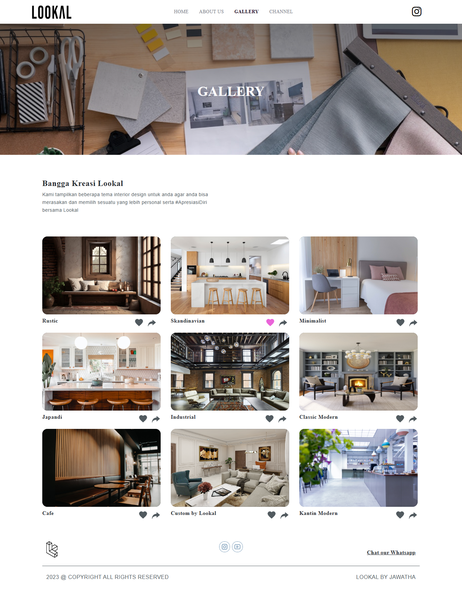
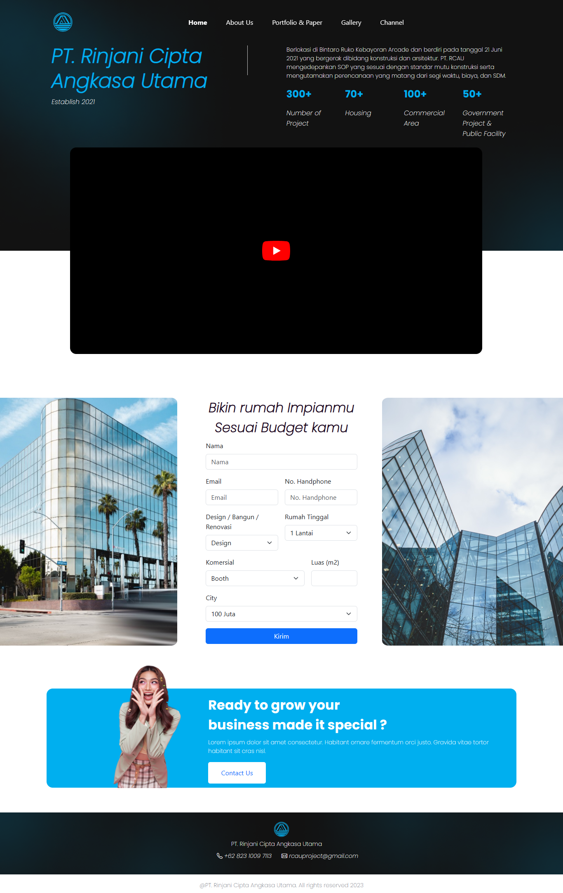
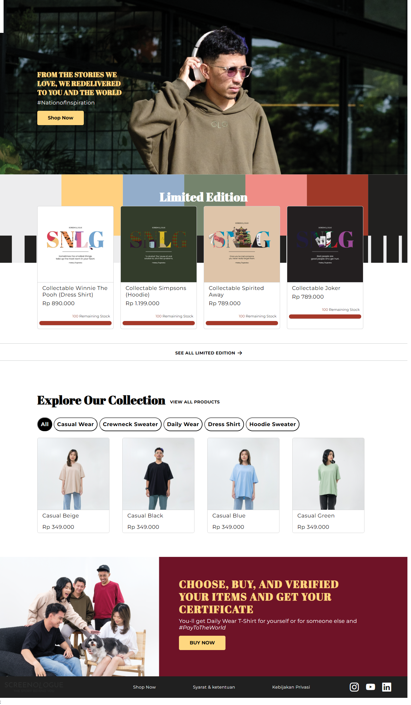

Saya adalah lulusan baru dari Program Studi Sistem Informasi di
Universitas Kristen Duta Wacana dengan IPK 3,76. Selama masa
studi, saya dikenal sebagai mahasiswa yang aktif dan bersemangat.
Saya terlibat dalam berbagai kegiatan organisasi mahasiswa serta
kepanitiaan, yang mengasah kemampuan saya dalam bekerja sama dan
memimpin. Saya juga terus mengembangkan minat dan keahlian saya di
bidang teknologi informasi, khususnya dalam analisis data,
pengelolaan sistem basis data, dan pemrograman, dengan rajin
mengikuti berbagai mata kuliah dan kegiatan yang relevan.
Pengalaman praktis saya semakin matang melalui magang selama 6
bulan di PT Jawatha Pura Media Utama, Yogyakarta. Di mana saya
bekerja sebagai Front-End Developer. Dalam peran ini, saya
bertanggung jawab dalam dalam pembuatan website yang responsive
dan sesuai dengan keinginan klien. Saya menggunakan bahasa
pemrograman HTML, CCS dan JavaScript untuk kepentingan pembuatan
website.
2008-2014
2014-2017
2017-2020
2020-2024
PT Jawatha Pura Media Utama | Agustus 2023 - Februari 2024
Selama enam bulan, saya dipercaya untuk menangani pengembangan 5 website pesanan di PT Jawatha Pura Media Utama Yogyakarta. Dalam proses pengembangan ini, saya bekerja secara kolaboratif dengan tim UI/UX untuk memastikan desain yang dihasilkan sesuai dengan kebutuhan dan harapan klien, serta user-friendly. Selain itu, saya juga bertanggung jawab untuk melakukan Connecting API dengan tim Back-End, yang melibatkan proses penghubungan dan penyesuaian data dari database agar dapat ditampilkan dengan benar pada sisi Front-End. Pengalaman ini mengajarkan saya pentingnya kerjasama tim, komunikasi efektif, serta keahlian teknis dalam menyelesaikan proyek pengembangan web yang kompleks dengan menggunakan bahasa Pemrograman JavaScript, HTML dan CSS.
Saya telah memperoleh sertifikasi SAP dari Edugate setelah menyelesaikan modul SAP01 - SAP Overview sebagai bagian dari program kursus SAP di kampus . Sertifikasi ini mencakup pemahaman dasar tentang sistem SAP, termasuk struktur, fungsionalitas, dan penerapannya dalam berbagai proses bisnis. Dengan pencapaian ini, saya memiliki dasar yang kuat dalam memahami bagaimana SAP dapat digunakan untuk meningkatkan efisiensi dan integrasi bisnis.
Mengikuti Kegiatan KEORGANISASIAN tingkat Universitas, Fakultas, maupun Prodi. Adapun rinciannya sebagai berikut:
Semasa berkuliah sempat membuat beberapa project yaitu :
Mengikuti Kegiatan KEPANITIAAN yang diadakan oleh Fakultas maupun Prodi dengan bermacam-macam jobdesc. Mulai dari menjadi Anggota, Koordinator hingga Sektretaris suatu event kepanitiaan. Adapun kepanitian yang pernah saya tangani ialah
Website Company Profile
Website Katalog Product
Website Company Profile
Website Penjualan Baju
